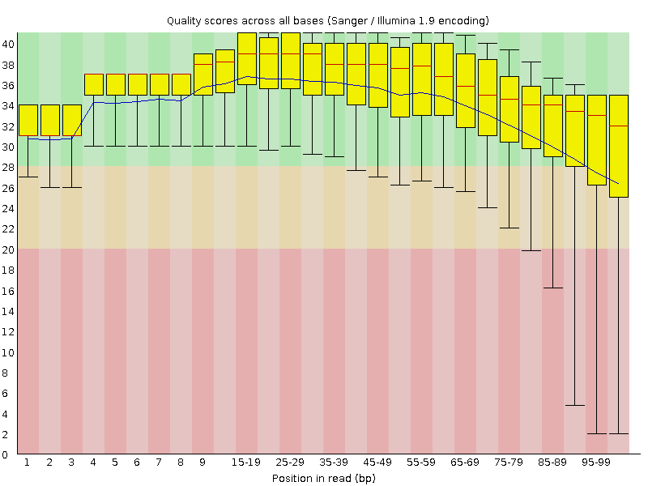
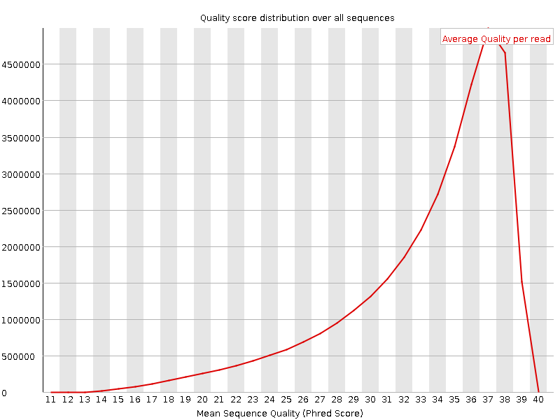
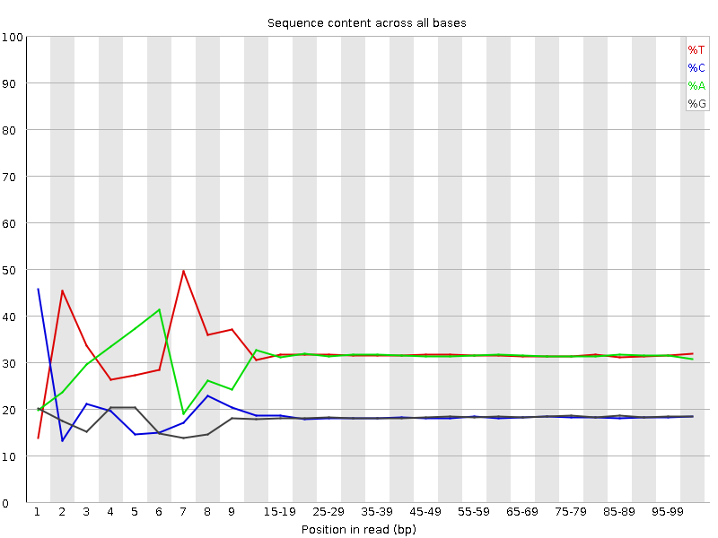
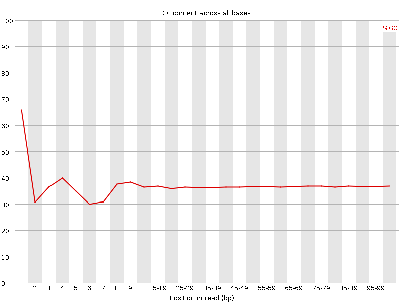
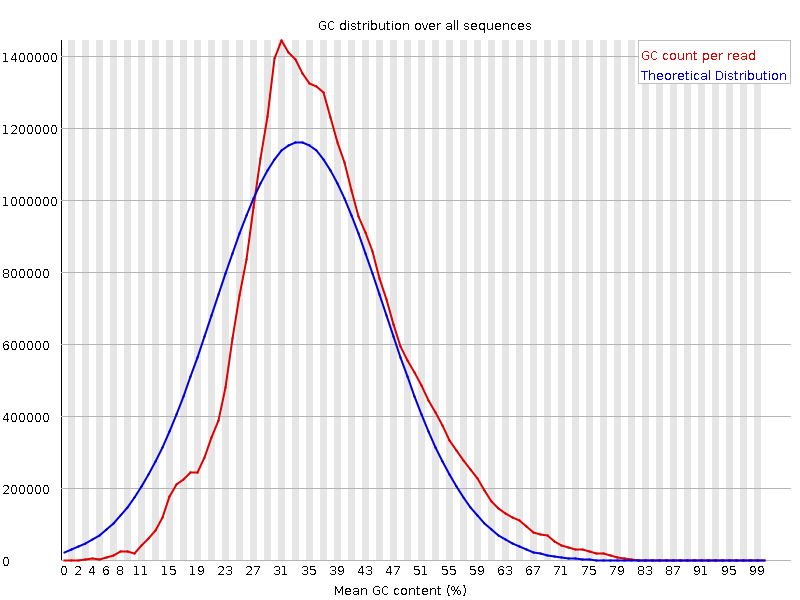
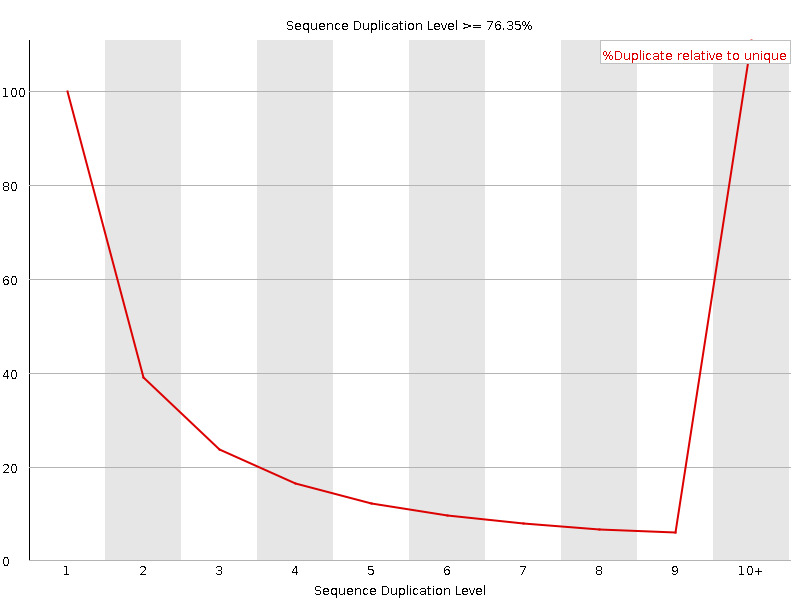
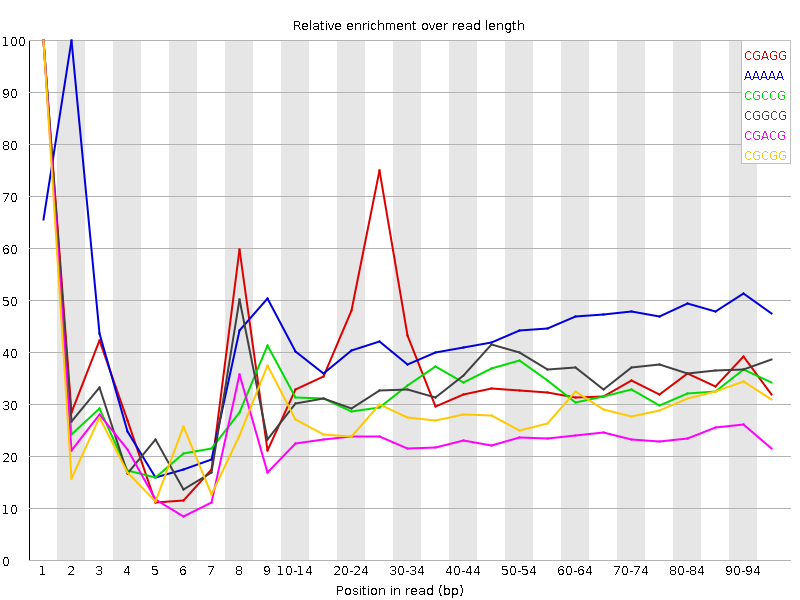

![[OK]](Icons/tick.png) Basic Statistics
Basic Statistics
| Measure | Value |
|---|---|
| Filename | c4_2.fq |
| File type | Conventional base calls |
| Encoding | Sanger / Illumina 1.9 |
| Total Sequences | 35186360 |
| Filtered Sequences | 0 |
| Sequence length | 100 |
| %GC | 36 |
Per base sequence quality

Per sequence quality scores

![[FAIL]](Icons/error.png) Per base sequence content
Per base sequence content

Per base GC content

![[WARN]](Icons/warning.png) Per sequence GC content
Per sequence GC content

Per base N content

Sequence Length Distribution

Sequence Duplication Levels

Overrepresented sequences
| Sequence | Count | Percentage | Possible Source |
|---|---|---|---|
| CTAATTTTCATCTTAATTCAACATCGAGGTCGCAAACATCTTTATCTATA | 111651 | 0.3173132998127684 | No Hit |
| CTTTCGTACAATTAATTAATATTTTATTATAGATAGAAACCAATCTGACT | 91697 | 0.2606038248912363 | No Hit |
| CTTTGTACAGTCAACATACTGCAGCTATTTAAAATAATTCATTGAGCAGA | 43329 | 0.12314146731858597 | No Hit |
| CAAAAACATGTCCTGTTGATTATAATTTTAGGTCGATCTGCTCAATGAAT | 38033 | 0.10809018039945024 | No Hit |
Kmer Content

| Sequence | Count | Obs/Exp Overall | Obs/Exp Max | Max Obs/Exp Position |
|---|---|---|---|---|
| CGAGG | 2763785 | 2.2948875 | 6.2018723 | 1 |
| AAAAA | 23239455 | 2.2645984 | 5.1564984 | 2 |
| CGCCG | 1630410 | 2.2478006 | 6.7730837 | 1 |
| CGGCG | 1485115 | 2.0812187 | 5.934967 | 1 |
| CGACG | 2511190 | 2.0513513 | 8.553092 | 1 |
| CGCGG | 1426310 | 1.9988102 | 6.9590774 | 1 |
| TCGAG | 3844320 | 1.8384016 | 5.085149 | 7 |
| CGCGA | 2137660 | 1.7462205 | 6.5626802 | 1 |
| CTCGA | 3703080 | 1.7421569 | 10.074144 | 1 |
| CTGGA | 3427650 | 1.6391448 | 7.3896503 | 1 |
| CGCCA | 2021140 | 1.6242772 | 6.0835347 | 1 |
| CGATC | 3448225 | 1.6222575 | 5.4864407 | 4 |
| CTTCT | 6048575 | 1.6192044 | 5.43102 | 1 |
| CGCGC | 1168520 | 1.6110058 | 5.482085 | 1 |
| CCGGC | 1160770 | 1.600321 | 5.9099784 | 1 |
| ATCGA | 5723370 | 1.5954217 | 5.1390033 | 6 |
| CTTCC | 3401120 | 1.5552857 | 5.6980133 | 1 |
| CGAGA | 3198890 | 1.5483149 | 5.543035 | 1 |
| CTCCA | 3303920 | 1.5291743 | 8.006122 | 1 |
| CTCGC | 1866925 | 1.4823526 | 7.5535707 | 1 |
| CAAAA | 8923860 | 1.4676362 | 5.0523458 | 1 |
| CTCGG | 1815830 | 1.4655361 | 9.57249 | 1 |
| CTTTC | 5460955 | 1.4618986 | 8.516925 | 1 |
| CTTTT | 9277410 | 1.4539039 | 7.019799 | 1 |
| CTTCG | 3096795 | 1.4394528 | 7.305654 | 1 |
| CGAAG | 2936780 | 1.4214494 | 5.640691 | 1 |
| CTGGC | 1754025 | 1.415654 | 5.438773 | 1 |
| TTTCA | 8834410 | 1.4012825 | 5.26542 | 6 |
| CTCGT | 2993025 | 1.3912184 | 8.032137 | 1 |
| TCATC | 5119240 | 1.3870538 | 5.7887273 | 8 |
| CGCGT | 1703375 | 1.3747748 | 5.095952 | 1 |
| CTCCT | 2946420 | 1.3473579 | 5.553439 | 1 |
| CTTCA | 4809320 | 1.3030812 | 5.9856706 | 1 |
| CGAAA | 4330825 | 1.2218938 | 5.5238934 | 1 |
| CTTGG | 2565045 | 1.2119275 | 6.519029 | 1 |
| CTTTG | 4297470 | 1.1693869 | 6.7475066 | 1 |
| CTTGA | 4067085 | 1.1201282 | 5.6837435 | 1 |
| CTCCG | 1282110 | 1.018005 | 5.352538 | 1 |
| CGTAC | 1737680 | 0.81751156 | 5.5246 | 5 |